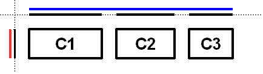

javax.swing.GroupLayout
javax.swing.GroupLayout
|
JavaTM Platform Standard Ed. 6 |
|||||||||
| 앞의 클래스 차의 클래스 | 프레임 있어 프레임 없음 | |||||||||
| 개요 : 상자 | 필드 | 생성자 | 메소드 | 상세 : 필드 | 생성자 | 메소드 | |||||||||
java.lang.Object
public class GroupLayout
GroupLayout 는,Container 내에 배치하기 위해서 컴퍼넌트를 계층적으로 그룹화 하는 LayoutManager 입니다. GroupLayout 는 빌더용입니다만, 핸드 코딩 할 수도 있습니다. 그룹화는,Group 클래스의 인스턴스에 의해 행해집니다. GroupLayout 는, 2 종류의 그룹을 지원합니다. 차례차례 그룹은, 아이 요소를 1 개씩 차례로 배치합니다. 병렬 그룹은, 아이 요소를 4 통과해 방법으로 배치합니다.
각 그룹에 임의의 수의 요소 (Group,Component, 또는 갭)를 포함할 수가 있습니다. 갭은, 최소 사이즈, 적절한 사이즈, 및 최대 사이즈를 가지는 불가시 컴퍼넌트라고 볼 수가 있습니다. GroupLayout 는, 적절한 갭도 지원합니다. 적절한 갭의 값은,LayoutStyle 로부터 얻을 수 있습니다.
요소는 용수철을 닮아 있습니다. 각 요소에는, 최소, 적절, 및 최대로 지정된 범위가 있습니다. 갭의 범위는, 개발자가 지정하는지,LayoutStyle 에 의해 결정됩니다. Component 의 범위는,Component 의 getMinimumSize 메소드,getPreferredSize 메소드, 및 getMaximumSize 메소드에 의해 결정됩니다. 또,Component 를 추가할 경우에, 그 컴퍼넌트의 범위는 아니고, 특정의 범위를 지정해 사용할 수도 있습니다. Group 의 범위는, 그룹의 종류에 의해 결정됩니다. ParallelGroup 의 범위는, 그 요소의 범위의 최대치입니다. SequentialGroup 의 범위는, 그 요소의 범위의 합계치입니다.
GroupLayout 는, 각 축을 따로 따로 취급합니다. 즉, 수평축을 나타내는 그룹과 수직축을 나타내는 그룹이 존재하게 됩니다. 수평 그룹은, 수평 축으로 따른 최소 사이즈, 적절한 사이즈, 및 최대 사이즈를 결정해, 그룹내의 컴퍼넌트의 x 의 값과 폭을 설정합니다. 수직 그룹은, 수직 축으로 따른 최소 사이즈, 적절한 사이즈, 및 최대 사이즈를 결정해, 그룹내의 컴퍼넌트의 y 의 값과 높이를 설정합니다. 각 Component 는, 수평 그룹과 수직 그룹의 양쪽 모두에 속하고 있을 필요가 있습니다. 그렇지 않은 경우는, 배치중 혹은 최소 사이즈, 적절한 사이즈, 또는 최대 사이즈가 요구되었을 때에 IllegalStateException 가 throw 됩니다.
다음의 그림에, 수평 축으로 따른 차례차례 그룹을 나타냅니다. 차례차례 그룹에는 3 개의 컴퍼넌트가 포함되어 있습니다. 병렬 그룹은, 수직 축으로 따라 사용되었습니다.

각 축을 따로 따로 취급하기 (위해)때문에, 그림에는 각 그룹의 범위와 각 축으로 따른 요소가 표시되고 있습니다. 각 컴퍼넌트의 범위는 축상에 투영 되고 있어 그룹은 파랑 (수평)과 빨강 (수직)으로 draw 되고 있습니다. 알기 쉽게, 차례차례 그룹내의 각 요소는 간격을 비워 늘어놓을 수 있고 있습니다.
수평 축으로 따른 차례차례 그룹은, 푸른 직선으로 draw 되고 있습니다. 차례차례 그룹은, 그룹내의 아이 요소의 합계치가 되어 있는 점에 주의해 주세요.
수평 축으로 따른 병렬 그룹은, 각 컴퍼넌트의 높이의 최대치가 되어 있습니다. 3 개의 컴퍼넌트는 모두 같은 높이이므로, 병렬 그룹도 같은 높이가 됩니다.
다음의 그림에, 3 개(살)의 같은 컴퍼넌트를 나타냅니다. 다만, 병렬 그룹은 수평축, 차례차례 그룹은 수직 축으로 따르고 있습니다.

3 개의 컴퍼넌트 가운데 좀 더도 값이 큰 것은 c1 이므로, 병렬 그룹의 사이즈는 c1 와 같게 됩니다. c2 와 c3 는 c1 보다 작기 때문에, 컴퍼넌트에 배치 방법이 지정되고 있으면 그방법, 지정되어 있지 않은 경우는 병렬 그룹의 디폴트의 배치 방법으로 배치됩니다. 그림의 c2 와 c3 는,LEADING 의 배치 방법으로 작성되었습니다. 컴퍼넌트가 금방 다른 곳으로 배치되고 있는 경우,c2 와 c3 는 역방향에 배치됩니다.
다음의 그림에, 수평축과 수직 축으로 따른 차례차례 그룹을 나타냅니다.
GroupLayout 는,Component 간에 갭을 삽입하는 기능을 제공합니다. 갭의 사이즈는,LayoutStyle 의 인스턴스에 의해 결정됩니다. 이 기능은,setAutoCreateGaps 메소드를 사용해 유효하게 할 수가 있습니다. 같이setAutoCreateContainerGaps 메소드를 사용해, 친컨테이너의 구석과 컨테이너에 접하는 컴퍼넌트간에 갭을 삽입할 수도 있습니다.
다음의 코드에서는, 어느 열에 2 개의 라벨, 다음의 열에 2 개의 텍스트 필드가 계속되는 패널을 구축합니다.
JComponent panel = ...;
GroupLayout layout = new GroupLayout(panel);
panel.setLayout(layout);
// Turn on automatically adding gaps between components
layout.setAutoCreateGaps(true);
// Turn on automatically creating gaps between components that touch
// the edge of the container and the container.
layout.setAutoCreateContainerGaps(true);
// Create a sequential group for the horizontal axis.
GroupLayout.SequentialGroup hGroup = layout.createSequentialGroup();
// The sequential group in turn contains two parallel groups.
// One parallel group contains the labels, the other the text fields.
// Putting the labels in a parallel group along the horizontal axis
// positions them at the same x location.
//
// Variable indentation is used to reinforce the level of grouping.
hGroup.addGroup(layout.createParallelGroup().
addComponent(label1). addComponent(label2));
hGroup.addGroup(layout.createParallelGroup().
addComponent(tf1). addComponent(tf2));
layout.setHorizontalGroup(hGroup);
// Create a sequential group for the vertical axis.
GroupLayout.SequentialGroup vGroup = layout.createSequentialGroup();
// The sequential group contains two parallel groups that align
// the contents along the baseline. The first parallel group contains
// the first label and text field, and the second parallel group contains
// the second label and text field. By using a sequential group
// the labels and text fields are positioned vertically after one another.
vGroup.addGroup(layout.createParallelGroup(Alignment.BASELINE).
addComponent(label1). addComponent(tf1));
vGroup.addGroup(layout.createParallelGroup(Alignment.BASELINE).
addComponent(label2). addComponent(tf2));
layout.setVerticalGroup(vGroup);
실행하면(자), 다음의 것이 생성됩니다.
이 배치는, 다음의 것으로 구성됩니다.
Group 의 add 메소드를 사용해 간접적으로 행해집니다.
add 메소드가 호출해 옆을 돌려줍니다. 이것에 의해, 간단하게 메소드 호출을 연쇄시킬 수가 있습니다. 예를 들어,group.addComponent(label1). addComponent(label2); 는 group.addComponent(label1); group.addComponent(label2); 와 동등합니다.
Group 에는, public 생성자 이 없습니다. 대신에,GroupLayout 의 create 메소드를 사용해 주세요.
| 상자의 클래스의 개요 | |
|---|---|
static class |
GroupLayout.Alignment
ParallelGroup 가 그 아이를 배치할 경우에 선택할 수 있는 방법의 열거입니다. |
class |
GroupLayout.Group
Group 는,GroupLayout 로 지원되는 2 종류의 오퍼레이션의 기반으로 됩니다. |
class |
GroupLayout.ParallelGroup
아이의 배치와 사이즈 설정을 실시하는 Group 입니다. |
class |
GroupLayout.SequentialGroup
요소의 배치와 사이즈 설정을 1 개씩 차례로 실시하는 Group 입니다. |
| 필드의 개요 | |
|---|---|
static int |
DEFAULT_SIZE
특정의 범위치로서 사용해야 할 컴퍼넌트로부터의 사이즈 (갭)를 나타냅니다. |
static int |
PREFERRED_SIZE
특정의 범위치로서 사용해야 할 컴퍼넌트로부터의 적절한 사이즈 (갭)를 나타냅니다. |
| 생성자 의 개요 | |
|---|---|
GroupLayout (Container host)
지정된 Container 의 GroupLayout 를 작성합니다. |
|
| 메소드의 개요 | |
|---|---|
void |
addLayoutComponent (Component component,
Object constraints)
친컨테이너에 Component 가 추가된 것을 나타내는 통지입니다. |
void |
addLayoutComponent (String name,
Component component)
친컨테이너에 Component 가 추가된 것을 나타내는 통지입니다. |
GroupLayout.ParallelGroup |
createBaselineGroup (boolean resizable,
boolean anchorBaselineToTop)
baseline에 따라 요소를 배치하는 ParallelGroup 를 작성해, 돌려줍니다. |
GroupLayout.ParallelGroup |
createParallelGroup ()
배치 방법 Alignment.LEADING 로 ParallelGroup 를 작성해, 돌려줍니다. |
GroupLayout.ParallelGroup |
createParallelGroup (GroupLayout.Alignment alignment)
지정의 배치 방법으로 ParallelGroup 를 작성해, 돌려줍니다. |
GroupLayout.ParallelGroup |
createParallelGroup (GroupLayout.Alignment alignment,
boolean resizable)
지정의 배치 방법과 지정의 사이즈 변경 동작으로 ParallelGroup 를 작성해, 돌려줍니다. |
GroupLayout.SequentialGroup |
createSequentialGroup ()
SequentialGroup 를 작성해, 돌려줍니다. |
boolean |
getAutoCreateContainerGaps ()
컨테이너와 이 컨테이너에 접하는 컴퍼넌트간의 갭이 자동적으로 작성되는 경우는, true 를 돌려줍니다. |
boolean |
getAutoCreateGaps ()
컴퍼넌트간의 갭이 자동적으로 작성되는 경우는, true 를 돌려줍니다. |
boolean |
getHonorsVisibility ()
컴퍼넌트의 사이즈 및 배치의 설정때, 컴퍼넌트의 가시 설정을 고려할지 어떨지를 돌려줍니다. |
float |
getLayoutAlignmentX (Container parent)
x 축방향의 배치를 돌려줍니다. |
float |
getLayoutAlignmentY (Container parent)
y 축방향의 배치를 돌려줍니다. |
LayoutStyle |
getLayoutStyle ()
컴퍼넌트간의 적절한 갭의 계산에 사용하는 LayoutStyle 를 돌려줍니다. |
void |
invalidateLayout (Container parent)
레이아웃을 무효로 해, 레이아웃 매니저가 정보를 캐쉬하고 있으면 그것을 파기합니다. |
void |
layoutContainer (Container parent)
지정된 컨테이너를 배치합니다. |
void |
linkSize (Component ... components)
지정의 컴퍼넌트를, 적절한 사이즈, 최소 사이즈, 또는 최대 사이즈를 고려하지 않고, 같은 사이즈로 설정합니다. |
void |
linkSize (int axis,
Component ... components)
지정의 컴퍼넌트를, 적절한 사이즈, 최소 사이즈, 또는 최대 사이즈를 고려하지 않고, 같은 사이즈로 설정해, 지정의 축으로 따라 배치합니다. |
Dimension |
maximumLayoutSize (Container parent)
지정의 컨테이너의 최대 사이즈를 돌려줍니다. |
Dimension |
minimumLayoutSize (Container parent)
지정의 컨테이너의 최소 사이즈를 돌려줍니다. |
Dimension |
preferredLayoutSize (Container parent)
지정의 컨테이너의 적절한 사이즈를 돌려줍니다. |
void |
removeLayoutComponent (Component component)
친컨테이너로부터 Component 가 삭제된 것을 나타내는 통지입니다. |
void |
replace (Component existingComponent,
Component newComponent)
기존의 컴퍼넌트를 새로운 컴퍼넌트로 옮겨놓습니다. |
void |
setAutoCreateContainerGaps (boolean autoCreateContainerPadding)
컨테이너와 이 컨테이너의 경계에 접하는 컴퍼넌트간의 갭을, 자동적으로 작성할지 어떨지를 돌려줍니다. |
void |
setAutoCreateGaps (boolean autoCreatePadding)
컴퍼넌트간의 갭을 자동적으로 작성할지 어떨지를 돌려줍니다. |
void |
setHonorsVisibility (boolean honorsVisibility)
컴퍼넌트의 사이즈 및 배치의 설정때, 컴퍼넌트의 가시 설정을 고려할지 어떨지를 설정합니다. |
void |
setHonorsVisibility (Component component,
Boolean honorsVisibility)
사이즈 및 배치의 설정때, 컴퍼넌트의 가시 설정을 고려할지 어떨지를 설정합니다. |
void |
setHorizontalGroup (GroupLayout.Group group)
Group 가, 수평 축으로 따라 컴퍼넌트의 배치와 사이즈를 설정하도록(듯이) 설정합니다. |
void |
setLayoutStyle (LayoutStyle layoutStyle)
컴퍼넌트간의 적절한 갭의 계산에 사용하는 LayoutStyle 를 설정합니다. |
void |
setVerticalGroup (GroupLayout.Group group)
Group 가, 수직 축으로 따라 컴퍼넌트의 배치와 사이즈를 설정하도록(듯이) 설정합니다. |
String |
toString ()
GroupLayout 의 캐릭터 라인 표현을 돌려줍니다. |
| 클래스 java.lang. Object 로부터 상속된 메소드 |
|---|
clone , equals , finalize , getClass , hashCode , notify , notifyAll , wait , wait , wait |
| 필드의 상세 |
|---|
public static final int DEFAULT_SIZE
GroupLayout.Group ,
정수 필드치 public static final int PREFERRED_SIZE
GroupLayout.Group ,
정수 필드치 | 생성자 의 상세 |
|---|
public GroupLayout(Container host)
Container 의 GroupLayout 를 작성합니다.
host - Container. GroupLayout 가 그
LayoutManager
IllegalArgumentException - 호스트가 null 의 경우| 메소드의 상세 |
|---|
public void setHonorsVisibility(boolean honorsVisibility)
true 는, 안보이는 컴퍼넌트를 배치의 일부로서 취급하지 않는 것을 나타냅니다. 값 false 는, 컴퍼넌트의 배치 및 사이즈 설정때, 가시 설정을 고려하지 않는 것을 나타냅니다.
값 false 는, 컴퍼넌트의 가시 설정이 동적으로 변경되었을 경우에, 주위의 컴퍼넌트나 사이즈를 변경하고 싶지 않은 경우에 사용합니다.
가시 설정이 명시적으로 지정되어 있지 않은 컴퍼넌트에는, 지정된 값이 사용됩니다.
디폴트는 true 입니다.
honorsVisibility - 컴퍼넌트의 사이즈 및 배치의 설정시에
컴퍼넌트의 가시 설정을 고려할지 어떨지setHonorsVisibility(Component, Boolean) public boolean getHonorsVisibility()
public void setHonorsVisibility(Component component,
Boolean honorsVisibility)
Boolean.TRUE 는, 안보이는 component 를 배치의 일부로서 취급하지 않는 것을 나타냅니다. 값 false 는,component 의 배치 및 사이즈의 설정때, 가시 설정을 고려하지 않는 것을 나타냅니다. 값 null 는, 단일의 인수 메소드 setHonorsVisibility 에 의해 지정된 값이 사용되는 것을 나타냅니다.
component 가 Container 의 아이가 아닌 경우, 이 GroupLayout 가 매니저가 되어,Container 에 추가됩니다.
component - 컴퍼넌트honorsVisibility - 사이즈 및 배치의 설정시에
component 의 가시 설정을 고려할지 어떨지
IllegalArgumentException - component 가 null 의 경우setHonorsVisibility(Component, Boolean) public void setAutoCreateGaps(boolean autoCreatePadding)
true 로,SequentialGroup 에 2개의 컴퍼넌트를 추가했을 경우, 이 2개의 컴퍼넌트간의 갭은 자동적으로 작성됩니다. 디폴트는 false 입니다.
autoCreatePadding - 컴퍼넌트간의 갭을
자동적으로 작성할지 어떨지public boolean getAutoCreateGaps()
true 를 돌려줍니다.
truepublic void setAutoCreateContainerGaps(boolean autoCreateContainerPadding)
false 입니다.
autoCreateContainerPadding - 컨테이너와 이 컨테이너의 경계에 접한다
컴퍼넌트간의 갭을 자동적으로
작성할지 어떨지public boolean getAutoCreateContainerGaps()
true 를 돌려줍니다.
truepublic void setHorizontalGroup(GroupLayout.Group group)
Group 가, 수평 축으로 따라 컴퍼넌트의 배치와 사이즈를 설정하도록(듯이) 설정합니다.
group - 수평 축으로 따라 배치와 사이즈를
설정하는 Group
IllegalArgumentException - 그룹이 null 의 경우public void setVerticalGroup(GroupLayout.Group group)
Group 가, 수직 축으로 따라 컴퍼넌트의 배치와 사이즈를 설정하도록(듯이) 설정합니다.
group - 수직 축으로 따라 배치와 사이즈를
설정하는 Group
IllegalArgumentException - 그룹이 null 의 경우public GroupLayout.SequentialGroup createSequentialGroup()
SequentialGroup 를 작성해, 돌려줍니다.
SequentialGrouppublic GroupLayout.ParallelGroup createParallelGroup()
Alignment.LEADING 로 ParallelGroup 를 작성해, 돌려줍니다. 이것은, 보다 범용성의 높은 createParallelGroup(Alignment) 메소드의 커버 메소드입니다.
ParallelGroupcreateParallelGroup(Alignment) public GroupLayout.ParallelGroup createParallelGroup(GroupLayout.Alignment alignment)
ParallelGroup 를 작성해, 돌려줍니다. 이것은, 보다 범용성의 높은 createParallelGroup(Alignment, boolean) 메소드 (2 번째의 인수의 값이 true)의 커버 메소드입니다.
alignment - 그룹의 요소의 배치 방법
ParallelGroup
IllegalArgumentException - alignment 가 null 의 경우createBaselineGroup(boolean, boolean) ,
GroupLayout.ParallelGroup
public GroupLayout.ParallelGroup createParallelGroup(GroupLayout.Alignment alignment,
boolean resizable)
ParallelGroup 를 작성해, 돌려줍니다. alignment 인수는, 그룹이 가득 안 되게 아이 요소를 배치하는 방법을 지정합니다. 예를 들어,ParallelGroup 의 인수 TRAILING 의 값이 100 으로, 아이에게 필요한 값이 50 의 경우, 이 아이는 50 의 위치에 배치됩니다 (컴퍼넌트의 방향은 왼쪽에서 오른쪽).
baseline 인수는, 수직축에서만 사용합니다. baseline 인수에 의해, 수평 축으로 따라 작성된 ParallelGroup 는,LEADING 로서 처리됩니다.
baseline 그룹의 동작의 자세한 것은,ParallelGroup 를 참조해 주세요.
alignment - 그룹의 요소의 배치 방법resizable - 그룹의 사이즈 변경이 가능한 경우는 true, 그룹의
사이즈 변경을 할 수 없는 경우는, 적절한 사이즈가 그룹의 최소 사이즈 및
최대 사이즈로서 사용됩니다.
ParallelGroup
IllegalArgumentException - alignment 가 null 의 경우createBaselineGroup(boolean, boolean) ,
GroupLayout.ParallelGroup
public GroupLayout.ParallelGroup createBaselineGroup(boolean resizable,
boolean anchorBaselineToTop)
ParallelGroup 를 작성해, 돌려줍니다.
resizable - 그룹의 사이즈 변경이 가능한가 어떤가anchorBaselineToTop - baseline의 엥커 위치가
그룹의 튼튼한가 하부일까createBaselineGroup(boolean, boolean) ,
GroupLayout.ParallelGroup public void linkSize(Component ... components)
이것을 여러 차례 사용해, 임의의 수의 컴퍼넌트에 같은 사이즈를 할당할 수가 있습니다.
링크를 가지는 컴퍼넌트의 사이즈는 변경할 수 없습니다.
components - 같은 사이즈가 아닌 Component 컴퍼넌트
IllegalArgumentException - components 가 null 또는
null 를 포함한 경우linkSize(int, Component[])
public void linkSize(int axis,
Component ... components)
이것을 여러 차례 사용해, 임의의 수의 컴퍼넌트에 같은 사이즈를 할당할 수가 있습니다.
링크를 가지는 Component 의 사이즈는 변경할 수 없습니다.
components - 같은 사이즈가 아닌 Component 컴퍼넌트axis - 사이즈를 링크하는 축.
SwingConstants.HORIZONTAL 또는
SwingConstans.VERTICAL
IllegalArgumentException - components 가 null 인지,
components 가 null 를 포함하는지, 또는 axis 가
SwingConstants.HORIZONTAL 에서도
SwingConstants.HORIZONTAL 도 아닌 경우
public void replace(Component existingComponent,
Component newComponent)
existingComponent - 삭제되어newComponent 로
옮겨놓을 수 있는 컴퍼넌트newComponent - existingComponent 의 위치에
삽입되는 컴퍼넌트
IllegalArgumentException - 어느 쪽인가의 컴퍼넌트가 null 또는
existingComponent 인 경우, 이 레이아웃 매니저에서는
관리되지 않는다public void setLayoutStyle(LayoutStyle layoutStyle)
LayoutStyle 를 설정합니다. 값 null 는,LayoutStyle 의 인스턴스를 공용하는 것을 나타냅니다.
layoutStyle - 사용하는 LayoutStyleLayoutStyle public LayoutStyle getLayoutStyle()
LayoutStyle 를 돌려줍니다. 이것은,setLayoutStyle 로 지정된 값 (null 의 경우가 있다)을 돌려줍니다.
LayoutStyle
public void addLayoutComponent(String name,
Component component)
Component 가 추가된 것을 나타내는 통지입니다. 이 메소드는 직접 호출해야 하는 것이 아닙니다. Group 메소드를 사용해,Component 를 추가하도록 해 주세요.
LayoutManager 내의 addLayoutComponent name - 컴퍼넌트에 관련지을 수 있었던 캐릭터 라인component - 추가되는 Componentpublic void removeLayoutComponent(Component component)
Component 가 삭제된 것을 나타내는 통지입니다. 이 메소드는 직접 호출해야 하는 것이 아닙니다. 친 Container 상에서 remove 메소드를 호출하도록 해 주세요.
LayoutManager 내의 removeLayoutComponent component - 삭제되는 컴퍼넌트Component.remove(java.awt.MenuComponent) public Dimension preferredLayoutSize(Container parent)
LayoutManager 내의 preferredLayoutSize parent - 적절한 사이즈를 돌려주는 컨테이너
parent 의 적절한 사이즈
IllegalArgumentException - parent 가, 이것을 작성했을 때에 사용했다
Container 가 아닌 경우
IllegalStateException - 이 레이아웃에, 수평 그룹에도 수직 그룹에도 속하지 않는다
컴퍼넌트가 추가되었을 경우Container.getPreferredSize() public Dimension minimumLayoutSize(Container parent)
LayoutManager 내의 minimumLayoutSize parent - 사이즈를 돌려주는 컨테이너
parent 의 최소 사이즈
IllegalArgumentException - parent 가, 이것을 작성했을 때에 사용했다
Container 가 아닌 경우
IllegalStateException - 이 레이아웃에, 수평 그룹에도 수직 그룹에도 속하지 않는다
컴퍼넌트가 추가되었을 경우Container.getMinimumSize() public void layoutContainer(Container parent)
LayoutManager 내의 layoutContainer parent - 배치되는 컨테이너
IllegalStateException - 이 레이아웃에, 수평 그룹에도 수직 그룹에도 속하지 않는다
컴퍼넌트가 추가되었을 경우
public void addLayoutComponent(Component component,
Object constraints)
Component 가 추가된 것을 나타내는 통지입니다. 이 메소드는 직접 호출해야 하는 것이 아닙니다. Group 메소드를 사용해,Component 를 추가하도록 해 주세요.
LayoutManager2 내의 addLayoutComponent component - 추가된 컴퍼넌트constraints - 컴퍼넌트를 배치하는 위치의 설명public Dimension maximumLayoutSize(Container parent)
LayoutManager2 내의 maximumLayoutSize parent - 사이즈를 돌려주는 컨테이너
parent 의 최대 사이즈
IllegalArgumentException - parent 가, 이것을 작성했을 때에 사용했다
Container 가 아닌 경우
IllegalStateException - 이 레이아웃에, 수평 그룹에도 수직 그룹에도 속하지 않는다
컴퍼넌트가 추가되었을 경우Container.getMaximumSize() public float getLayoutAlignmentX(Container parent)
LayoutManager2 내의 getLayoutAlignmentX parent - 이 LayoutManager 를 호스트 하는 Container
. 5 를 돌려준다
IllegalArgumentException - parent 가, 이것을 작성했을 때에 사용했다
Container 가 아닌 경우public float getLayoutAlignmentY(Container parent)
LayoutManager2 내의 getLayoutAlignmentY parent - 이 LayoutManager 를 호스트 하는 Container
. 5 를 돌려준다
IllegalArgumentException - parent 가, 이것을 작성했을 때에 사용했다
Container 가 아닌 경우public void invalidateLayout(Container parent)
LayoutManager2 내의 invalidateLayout parent - 이 LayoutManager 를 호스트 하는 Container
IllegalArgumentException - parent 가, 이것을 작성했을 때에 사용했다
Container 가 아닌 경우public String toString()
GroupLayout 의 캐릭터 라인 표현을 돌려줍니다. 이 메소드는 디버그용이며, 반환되는 캐릭터 라인의 내용 및 형식은 구현에 따라서 다릅니다.
Object 내의 toString GroupLayout 의 캐릭터 라인 표현
|
JavaTM Platform Standard Ed. 6 |
|||||||||
| 앞의 클래스 차의 클래스 | 프레임 있어 프레임 없음 | |||||||||
| 개요 : 상자 | 필드 | 생성자 | 메소드 | 상세 : 필드 | 생성자 | 메소드 | |||||||||
Copyright 2006 Sun Microsystems, Inc. All rights reserved. Use is subject to license terms . Documentation Redistribution Policy 도 참조해 주세요.